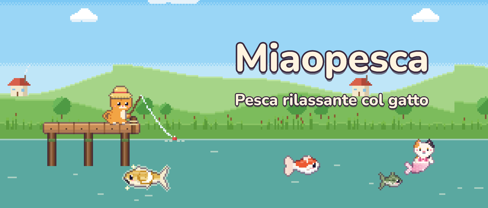
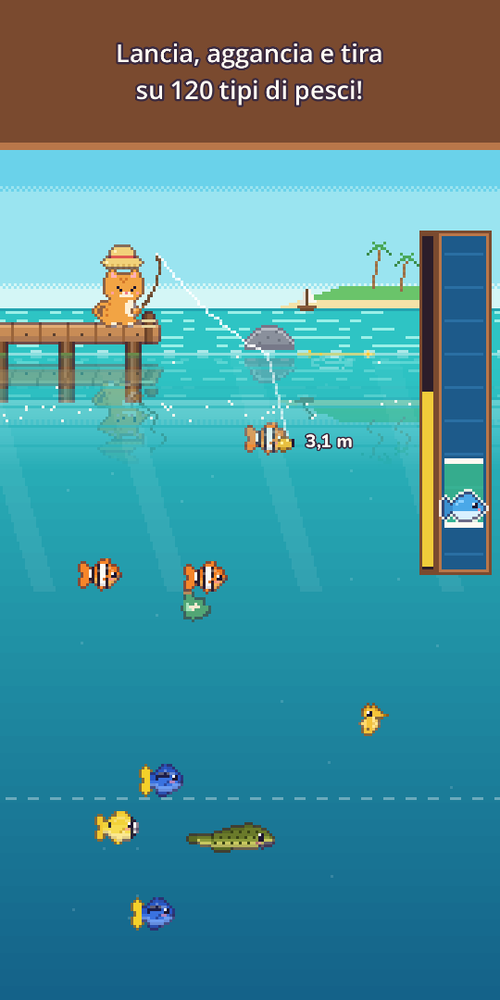
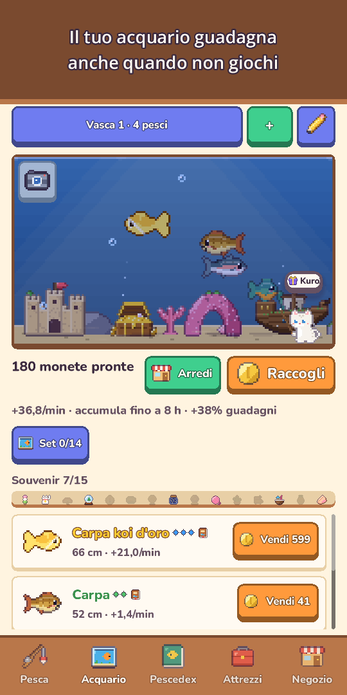
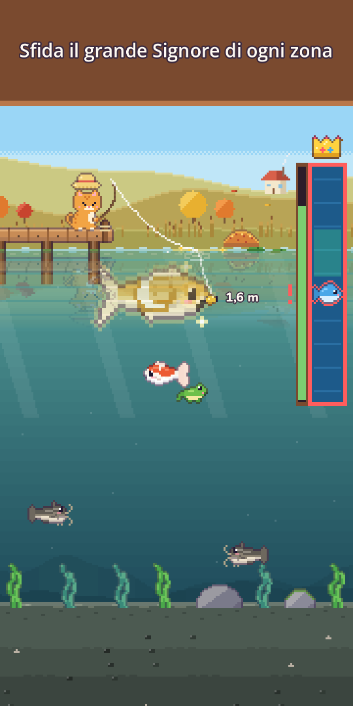
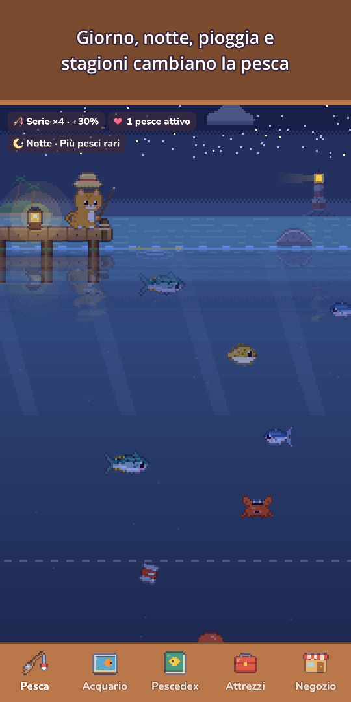
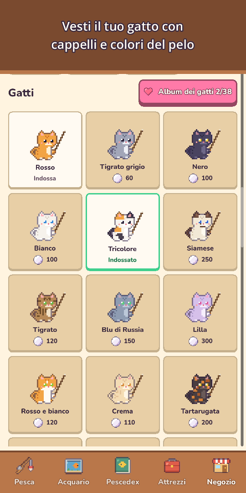
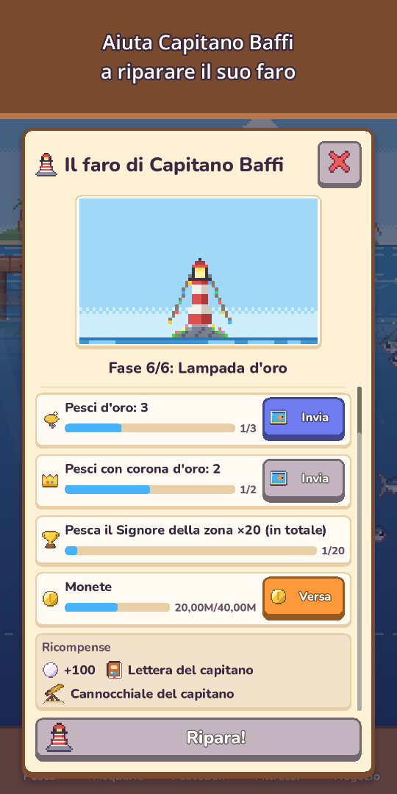
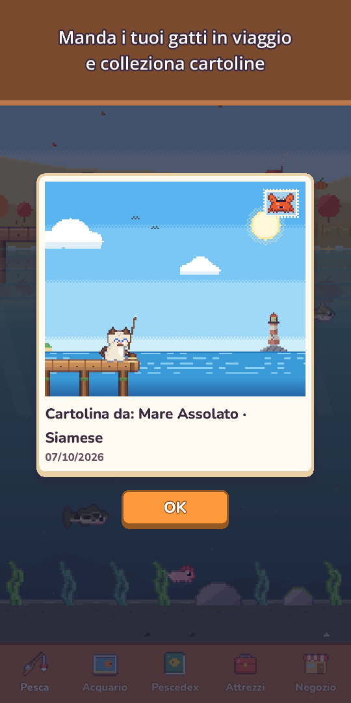

Miaopesca: Pesca gattosa
Pesca rilassante col gatto
Prendi canna e muta! Pesca 120 specie, immergiti per fotografare la vita marina e incontra rari gatti sirena.







Prendi la canna, micio: l'acqua è piena di sorprese!
Miaopesca è un gioco di pesca accogliente in pixel art che si gioca con un solo pollice. Lancia la lenza, guida l'esca verso i pesci che vedi nuotare e tirali su con una barra di cattura davvero soddisfacente.
- Pesca con un pollicetieni premuto per lanciare, trascina per guidare l'esca, tieni premuto per recuperare. Tocca quando il galleggiante affonda per partire in vantaggio (facoltativo), con cerchi nell'acqua, spruzzi, vibrazione e monete che volano nel borsellino
- 120 specie in 10 luoghiStagno del Prato, Fiume di Montagna, Mare Assolato, Barriera Corallina, Lago Ghiacciato, L'Abisso, il Tempio Sommerso, il Lago delle Nuvole, l'Isola Vulcano e le Mangrovie
- Cerca i pesci dorati, i banchi di pesci rari e leggende come la Carpa lunare e la Balena stellare, e sfida una volta al giorno il grande Signore di ogni zona
- Immersioniindossa la muta, nuota in ogni luogo per fotografare creature che non si pescano e riempi il tuo Album foto. Con la torcia scopri grotte profonde nascoste
- Gatti sirenain ogni luogo vive un gatto sirena, più raro di qualsiasi leggenda. Accoglilo nell'acquario o liberalo per una benedizione fortunata
- 25 esche in 5 livelliesche migliori attirano pesci più rari, esche speciali richiamano sirene e leggende, e un pesce forte può persino spezzarti la lenza!
- Un cielo vivogiorno e notte seguono il tuo orologio, pioggia, neve e arcobaleni cambiano la pesca, le stelle cadenti regalano perle, e stagioni e luna vera cambiano il paesaggio. Ogni zona mostra il meteo delle prossime 6 ore e increspature dorate indicano i pesci grossi
- Pescedexmolti pesci hanno il loro momento preferito (notte, pioggia, alba o stagione), le catture più grandi vincono Corone d'oro e ogni prima cattura ricorda il suo cielo: ora, meteo, stagione e zona
- Acquarioi tuoi pesci guadagnano monete anche quando non giochi. Decoralo con una Nave affondata, un Arco di corallo e altro, completa i set per guadagnare di più, condividi i Layout dell'acquario con un codice breve e tocca un pesce per vedere dove l'hai pescato e da quanti giorni state insieme
- Vita da gatto e collezionecappelli dal Cappello rana alla Corona, colori del pelo, cappelli stagionali e un accogliente Angolo del gatto. Manda un gatto di famiglia in un Viaggio felino di 3 ore per cartoline in pixel art e leggi il suo Diario felino al ritorno
- Vicini e festei gatti vicini visitano il tuo acquario e lasciano souvenir, e l'Amicizia porta nuove battute, piccoli regali e un cappello dell'amicizia. Torneo settimanale, Pesca insieme ogni mese, Pesce ospite della settimana e 5 feste l'anno (Ciliegi, Estate, Halloween, Natale e Capodanno) con timbri per decorazioni esclusive che restano per sempre
- Leggi le lettere in bottiglia di Capitano Baffi, un vecchio gatto guardiano del faro, e aiutalo a restaurare il suo faro
- Cresci con calmapotenzia Canna, Mulinello, Lenza, Esca e Vasca, crea un'esca da un pesce pescato per attirare quella specie (tranne i leggendari), più Richieste del giorno, Regalo del giorno (saltare un giorno non ti fa perdere nulla) e regali per i giorni insieme
- Piccoli piacerila vista paesaggio nasconde i pulsanti per goderti solo il panorama, il Diario di pesca conserva un Album foto con le ultime 12 foto dell'acquario e dell'Angolo del gatto, e ogni giorno un amichetto si nasconde nel paesaggio in cambio di perle
- Gioca offline, quando vuoi
Gratis da giocare, con acquisti facoltativi: pacchetti di Perle, Pacchetto Iniziale e Pacchetto Sostenitore (ricompense senza guardare pubblicità, cappello Corona e limite di guadagni offline raddoppiato). Puoi pescare tutte le 120 specie senza spendere nulla.
Nessuna pubblicità forzata, nessun banner. Le pubblicità sono solo ricompense facoltative che scegli tu, come vendere una cattura al doppio.
Rilassati, lancia la lenza e scopri cosa abbocca oggi!